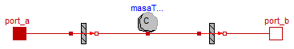

| Name | Description |
|---|---|
| TransmisionCalor1D | Modelo transferencia de calor glogal. Desprecia la masa térmica de las capas. |
| TransmisionCalor1D_MasaTermica | Modelo transferencia de calor glogal. Tienen en cuenta la inercia termica medio material separador. |
| Type | Name | Default | Description |
|---|---|---|---|
| Real | U | 1 | Coeficiente global de intercambio de calor |
| Area | A | 1 | Superficie de intercambio efectiva [m2] |
| Type | Name | Description |
|---|---|---|
| HeatPort_a | port_a | |
| HeatPort_b | port_b |
model TransmisionCalor1D "Modelo transferencia de calor glogal. Desprecia la masa térmica de las capas." extends Modelica.Thermal.HeatTransfer.Interfaces.Element1D; parameter Real U=1 "Coeficiente global de intercambio de calor"; parameter Modelica.SIunits.Area A=1 "Superficie de intercambio efectiva"; equation Q_flow=A*U*dT; end TransmisionCalor1D;

| Type | Name | Default | Description |
|---|---|---|---|
| Real | U_a | 1 | Coeficiente global de intercambio de calor para el lado a |
| Real | U_b | 1 | Coeficiente global de intercambio de calor para el lado b |
| Area | A | 1 | Superficie de intercambio efectiva [m2] |
| Real | C | 1 | Capacidad calorifica de la masa |
| Type | Name | Description |
|---|---|---|
| HeatPort_a | port_a | |
| HeatPort_b | port_b |
model TransmisionCalor1D_MasaTermica
"Modelo transferencia de calor glogal. Tienen en cuenta la inercia termica medio material separador."
Modelica.Thermal.HeatTransfer.Interfaces.HeatPort_a port_a;
Modelica.Thermal.HeatTransfer.Interfaces.HeatPort_b port_b;
Soltermica.ClasesBasicas.TransferenciaCalor.TransmisionCalor1D
transmisionCalor1D(
final A=A,
final U=U_a);
Soltermica.ClasesBasicas.TransferenciaCalor.TransmisionCalor1D
transmisionCalor1D1(
final U=U_b,
final A=A);
Modelica.Thermal.HeatTransfer.HeatCapacitor masaTermica(
final C=C);
parameter Real U_a=1
"Coeficiente global de intercambio de calor para el lado a";
parameter Real U_b=1
"Coeficiente global de intercambio de calor para el lado b";
parameter Modelica.SIunits.Area A=1 "Superficie de intercambio efectiva";
parameter Real C=1 "Capacidad calorifica de la masa";
equation
connect(port_a, transmisionCalor1D.port_a);
connect(transmisionCalor1D.port_b, masaTermica.port);
connect(masaTermica.port, transmisionCalor1D1.port_a);
connect(transmisionCalor1D1.port_b, port_b);
connect(port_b, port_b);
end TransmisionCalor1D_MasaTermica;